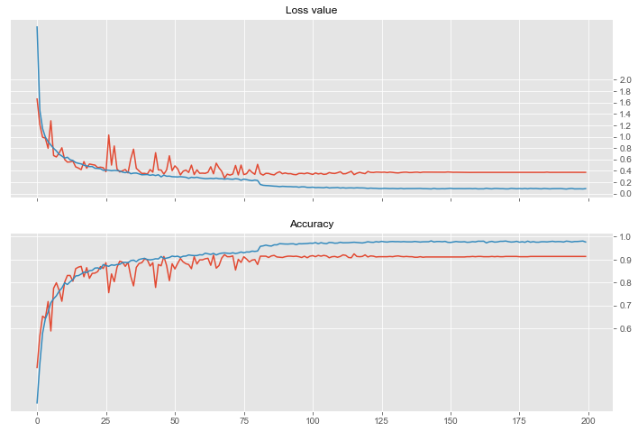

In [8]: runfile('D:/MTech IS/MTech-Onedrive/PSUPR/National University of Singapore/PRML CA2 - Image Classifier/submission/Veg_Classifier_CNN.py', wdir='D:/MTech IS/MTech-Onedrive/PSUPR/National University of Singapore/PRML CA2 - Image Classifier/submission')
Size of training dataset- 4973
Size of training dataset- 4973
Size of validation dataset- 878
Size of validation dataset- 878
WARNING:tensorflow:From C:\Users\revat\Anaconda3\envs\ca2_aivoyagers\lib\site-packages\tensorflow\python\ops\resource_variable_ops.py:435: colocate_with (from tensorflow.python.framework.ops) is deprecated and will be removed in a future version.
Instructions for updating:
Colocations handled automatically by placer.
WARNING:tensorflow:From C:\Users\revat\Anaconda3\envs\ca2_aivoyagers\lib\site-packages\tensorflow\python\keras\layers\core.py:143: calling dropout (from tensorflow.python.ops.nn_ops) with keep_prob is deprecated and will be removed in a future version.
Instructions for updating:
Please use `rate` instead of `keep_prob`. Rate should be set to `rate = 1 - keep_prob`.
_________________________________________________________________
Layer (type) Output Shape Param #
=================================================================
input_1 (InputLayer) (None, 128, 128, 3) 0
_________________________________________________________________
conv2d (Conv2D) (None, 128, 128, 48) 1344
_________________________________________________________________
max_pooling2d (MaxPooling2D) (None, 64, 64, 48) 0
_________________________________________________________________
dropout (Dropout) (None, 64, 64, 48) 0
_________________________________________________________________
conv2d_1 (Conv2D) (None, 64, 64, 64) 27712
_________________________________________________________________
max_pooling2d_1 (MaxPooling2 (None, 32, 32, 64) 0
_________________________________________________________________
dropout_1 (Dropout) (None, 32, 32, 64) 0
_________________________________________________________________
conv2d_2 (Conv2D) (None, 32, 32, 128) 73856
_________________________________________________________________
max_pooling2d_2 (MaxPooling2 (None, 16, 16, 128) 0
_________________________________________________________________
dropout_2 (Dropout) (None, 16, 16, 128) 0
_________________________________________________________________
conv2d_3 (Conv2D) (None, 16, 16, 256) 295168
_________________________________________________________________
max_pooling2d_3 (MaxPooling2 (None, 8, 8, 256) 0
_________________________________________________________________
dropout_3 (Dropout) (None, 8, 8, 256) 0
_________________________________________________________________
flatten (Flatten) (None, 16384) 0
_________________________________________________________________
dense (Dense) (None, 128) 2097280
_________________________________________________________________
dense_1 (Dense) (None, 256) 33024
_________________________________________________________________
dense_2 (Dense) (None, 5) 1285
=================================================================
Total params: 2,529,669
Trainable params: 2,529,669
Non-trainable params: 0
_________________________________________________________________
WARNING:tensorflow:From C:\Users\revat\Anaconda3\envs\ca2_aivoyagers\lib\site-packages\tensorflow\python\ops\math_ops.py:3066: to_int32 (from tensorflow.python.ops.math_ops) is deprecated and will be removed in a future version.
Instructions for updating:
Use tf.cast instead.
Learning rate: 0.001
Epoch 1/200
878/878 [==============================] - 1s 893us/sample - loss: 1.6627 - acc: 0.4282
78/78 [==============================] - 16s 204ms/step - loss: 2.9284 - acc: 0.2733 - val_loss: 1.6625 - val_acc: 0.4282
Learning rate: 0.001
Epoch 2/200
878/878 [==============================] - 1s 628us/sample - loss: 1.2138 - acc: 0.5661
78/78 [==============================] - 14s 176ms/step - loss: 1.4629 - acc: 0.4432 - val_loss: 1.2131 - val_acc: 0.5661
Learning rate: 0.001
Epoch 3/200
878/878 [==============================] - 1s 619us/sample - loss: 0.9906 - acc: 0.6526
78/78 [==============================] - 14s 174ms/step - loss: 1.1412 - acc: 0.5775 - val_loss: 0.9894 - val_acc: 0.6526
Learning rate: 0.001
Epoch 4/200
878/878 [==============================] - 1s 653us/sample - loss: 0.9753 - acc: 0.6435
78/78 [==============================] - 16s 209ms/step - loss: 0.9939 - acc: 0.6409 - val_loss: 0.9739 - val_acc: 0.6435
Learning rate: 0.001
Epoch 5/200
878/878 [==============================] - 1s 632us/sample - loss: 0.7969 - acc: 0.7164
78/78 [==============================] - 14s 179ms/step - loss: 0.9137 - acc: 0.6702 - val_loss: 0.7952 - val_acc: 0.7164
Learning rate: 0.001
Epoch 6/200
878/878 [==============================] - 1s 679us/sample - loss: 1.2761 - acc: 0.5877
78/78 [==============================] - 14s 182ms/step - loss: 0.8512 - acc: 0.7110 - val_loss: 1.2793 - val_acc: 0.5877
Learning rate: 0.001
Epoch 7/200
878/878 [==============================] - 1s 642us/sample - loss: 0.6692 - acc: 0.7745
78/78 [==============================] - 14s 182ms/step - loss: 0.7941 - acc: 0.7285 - val_loss: 0.6675 - val_acc: 0.7745
Learning rate: 0.001
Epoch 8/200
878/878 [==============================] - 1s 663us/sample - loss: 0.6449 - acc: 0.7984
78/78 [==============================] - 15s 187ms/step - loss: 0.7494 - acc: 0.7414 - val_loss: 0.6434 - val_acc: 0.7984
Learning rate: 0.001
Epoch 9/200
878/878 [==============================] - 1s 659us/sample - loss: 0.7143 - acc: 0.7654
78/78 [==============================] - 16s 210ms/step - loss: 0.6901 - acc: 0.7619 - val_loss: 0.7102 - val_acc: 0.7654
Learning rate: 0.001
Epoch 10/200
878/878 [==============================] - 1s 672us/sample - loss: 0.8043 - acc: 0.7175
78/78 [==============================] - 15s 187ms/step - loss: 0.6586 - acc: 0.7754 - val_loss: 0.8045 - val_acc: 0.7175
Learning rate: 0.001
Epoch 11/200
878/878 [==============================] - 1s 660us/sample - loss: 0.5995 - acc: 0.8007
78/78 [==============================] - 15s 192ms/step - loss: 0.6225 - acc: 0.7981 - val_loss: 0.5990 - val_acc: 0.8007
Learning rate: 0.001
Epoch 12/200
878/878 [==============================] - 1s 725us/sample - loss: 0.5545 - acc: 0.8303
78/78 [==============================] - 15s 191ms/step - loss: 0.6401 - acc: 0.7909 - val_loss: 0.5518 - val_acc: 0.8303
Learning rate: 0.001
Epoch 13/200
878/878 [==============================] - 1s 638us/sample - loss: 0.5593 - acc: 0.8303
78/78 [==============================] - 14s 177ms/step - loss: 0.5922 - acc: 0.8029 - val_loss: 0.5557 - val_acc: 0.8303
Learning rate: 0.001
Epoch 14/200
878/878 [==============================] - 1s 601us/sample - loss: 0.5716 - acc: 0.8052
78/78 [==============================] - 14s 178ms/step - loss: 0.5816 - acc: 0.8120 - val_loss: 0.5691 - val_acc: 0.8052
Learning rate: 0.001
Epoch 15/200
878/878 [==============================] - 1s 629us/sample - loss: 0.4703 - acc: 0.8599
78/78 [==============================] - 14s 174ms/step - loss: 0.5451 - acc: 0.8283 - val_loss: 0.4689 - val_acc: 0.8599
Learning rate: 0.001
Epoch 16/200
878/878 [==============================] - 1s 616us/sample - loss: 0.4499 - acc: 0.8667
78/78 [==============================] - 15s 190ms/step - loss: 0.5309 - acc: 0.8297 - val_loss: 0.4475 - val_acc: 0.8667
Learning rate: 0.001
Epoch 17/200
878/878 [==============================] - 1s 628us/sample - loss: 0.4214 - acc: 0.8702
78/78 [==============================] - 14s 177ms/step - loss: 0.5198 - acc: 0.8363 - val_loss: 0.4194 - val_acc: 0.8702
Learning rate: 0.001
Epoch 18/200
878/878 [==============================] - 1s 609us/sample - loss: 0.5620 - acc: 0.8246
78/78 [==============================] - 14s 180ms/step - loss: 0.4966 - acc: 0.8452 - val_loss: 0.5605 - val_acc: 0.8246
Learning rate: 0.001
Epoch 19/200
878/878 [==============================] - 1s 608us/sample - loss: 0.4466 - acc: 0.8645
78/78 [==============================] - 13s 172ms/step - loss: 0.4871 - acc: 0.8428 - val_loss: 0.4450 - val_acc: 0.8645
Learning rate: 0.001
Epoch 20/200
878/878 [==============================] - 1s 607us/sample - loss: 0.5215 - acc: 0.8178
78/78 [==============================] - 14s 181ms/step - loss: 0.4734 - acc: 0.8510 - val_loss: 0.5189 - val_acc: 0.8178
Learning rate: 0.001
Epoch 21/200
878/878 [==============================] - 1s 605us/sample - loss: 0.5102 - acc: 0.8394
78/78 [==============================] - 13s 172ms/step - loss: 0.4743 - acc: 0.8526 - val_loss: 0.5081 - val_acc: 0.8394
Learning rate: 0.001
Epoch 22/200
878/878 [==============================] - 1s 610us/sample - loss: 0.5000 - acc: 0.8405
78/78 [==============================] - 14s 179ms/step - loss: 0.4453 - acc: 0.8627 - val_loss: 0.4994 - val_acc: 0.8405
Learning rate: 0.001
Epoch 23/200
878/878 [==============================] - 1s 608us/sample - loss: 0.4566 - acc: 0.8474
78/78 [==============================] - 14s 173ms/step - loss: 0.4420 - acc: 0.8637 - val_loss: 0.4552 - val_acc: 0.8474
Learning rate: 0.001
Epoch 24/200
878/878 [==============================] - 1s 611us/sample - loss: 0.4670 - acc: 0.8690
78/78 [==============================] - 14s 178ms/step - loss: 0.4353 - acc: 0.8586 - val_loss: 0.4635 - val_acc: 0.8690
Learning rate: 0.001
Epoch 25/200
878/878 [==============================] - 1s 610us/sample - loss: 0.4556 - acc: 0.8610
78/78 [==============================] - 14s 175ms/step - loss: 0.4066 - acc: 0.8779 - val_loss: 0.4536 - val_acc: 0.8610
Learning rate: 0.001
Epoch 26/200
878/878 [==============================] - 1s 609us/sample - loss: 0.3854 - acc: 0.8861
78/78 [==============================] - 14s 179ms/step - loss: 0.4133 - acc: 0.8735 - val_loss: 0.3837 - val_acc: 0.8861
Learning rate: 0.001
Epoch 27/200
878/878 [==============================] - 1s 605us/sample - loss: 1.0304 - acc: 0.7551
78/78 [==============================] - 14s 176ms/step - loss: 0.4089 - acc: 0.8703 - val_loss: 1.0287 - val_acc: 0.7551
Learning rate: 0.001
Epoch 28/200
878/878 [==============================] - 1s 615us/sample - loss: 0.5022 - acc: 0.8371
78/78 [==============================] - 15s 187ms/step - loss: 0.4020 - acc: 0.8767 - val_loss: 0.4996 - val_acc: 0.8371
Learning rate: 0.001
Epoch 29/200
878/878 [==============================] - 1s 608us/sample - loss: 0.8388 - acc: 0.8030
78/78 [==============================] - 13s 173ms/step - loss: 0.4057 - acc: 0.8747 - val_loss: 0.8364 - val_acc: 0.8030
Learning rate: 0.001
Epoch 30/200
878/878 [==============================] - 1s 608us/sample - loss: 0.4339 - acc: 0.8656
78/78 [==============================] - 14s 179ms/step - loss: 0.4032 - acc: 0.8779 - val_loss: 0.4318 - val_acc: 0.8656
Learning rate: 0.001
Epoch 31/200
878/878 [==============================] - 1s 615us/sample - loss: 0.3806 - acc: 0.8929
78/78 [==============================] - 13s 172ms/step - loss: 0.3950 - acc: 0.8789 - val_loss: 0.3784 - val_acc: 0.8929
Learning rate: 0.001
Epoch 32/200
878/878 [==============================] - 1s 762us/sample - loss: 0.4028 - acc: 0.8884
78/78 [==============================] - 14s 183ms/step - loss: 0.3764 - acc: 0.8864 - val_loss: 0.3991 - val_acc: 0.8884
Learning rate: 0.001
Epoch 33/200
878/878 [==============================] - 1s 607us/sample - loss: 0.4234 - acc: 0.8702
78/78 [==============================] - 14s 175ms/step - loss: 0.3656 - acc: 0.8874 - val_loss: 0.4224 - val_acc: 0.8702
Learning rate: 0.001
Epoch 34/200
878/878 [==============================] - 1s 612us/sample - loss: 0.3633 - acc: 0.8872
78/78 [==============================] - 14s 181ms/step - loss: 0.3793 - acc: 0.8856 - val_loss: 0.3611 - val_acc: 0.8872
Learning rate: 0.001
Epoch 35/200
878/878 [==============================] - 1s 610us/sample - loss: 0.6136 - acc: 0.8257
78/78 [==============================] - 14s 175ms/step - loss: 0.3472 - acc: 0.8952 - val_loss: 0.6116 - val_acc: 0.8257
Learning rate: 0.001
Epoch 36/200
878/878 [==============================] - 1s 605us/sample - loss: 0.7804 - acc: 0.7847
78/78 [==============================] - 14s 181ms/step - loss: 0.3580 - acc: 0.8972 - val_loss: 0.7804 - val_acc: 0.7847
Learning rate: 0.001
Epoch 37/200
878/878 [==============================] - 1s 616us/sample - loss: 0.4441 - acc: 0.8656
78/78 [==============================] - 13s 173ms/step - loss: 0.3594 - acc: 0.8908 - val_loss: 0.4431 - val_acc: 0.8656
Learning rate: 0.001
Epoch 38/200
878/878 [==============================] - 1s 615us/sample - loss: 0.3999 - acc: 0.8827
78/78 [==============================] - 14s 182ms/step - loss: 0.3448 - acc: 0.9001 - val_loss: 0.3986 - val_acc: 0.8827
Learning rate: 0.001
Epoch 39/200
878/878 [==============================] - 1s 610us/sample - loss: 0.3542 - acc: 0.8861
78/78 [==============================] - 13s 172ms/step - loss: 0.3295 - acc: 0.9031 - val_loss: 0.3519 - val_acc: 0.8861
Learning rate: 0.001
Epoch 40/200
878/878 [==============================] - 1s 623us/sample - loss: 0.3566 - acc: 0.9021
78/78 [==============================] - 14s 179ms/step - loss: 0.3299 - acc: 0.9053 - val_loss: 0.3539 - val_acc: 0.9021
Learning rate: 0.001
Epoch 41/200
878/878 [==============================] - 1s 612us/sample - loss: 0.3427 - acc: 0.8986
78/78 [==============================] - 14s 175ms/step - loss: 0.3332 - acc: 0.8999 - val_loss: 0.3412 - val_acc: 0.8986
Learning rate: 0.001
Epoch 42/200
878/878 [==============================] - 1s 607us/sample - loss: 0.4224 - acc: 0.8713
78/78 [==============================] - 14s 179ms/step - loss: 0.3205 - acc: 0.8985 - val_loss: 0.4214 - val_acc: 0.8713
Learning rate: 0.001
Epoch 43/200
878/878 [==============================] - 1s 602us/sample - loss: 0.3775 - acc: 0.8861
78/78 [==============================] - 13s 173ms/step - loss: 0.3288 - acc: 0.9001 - val_loss: 0.3758 - val_acc: 0.8861
Learning rate: 0.001
Epoch 44/200
878/878 [==============================] - 1s 618us/sample - loss: 0.7245 - acc: 0.7779
78/78 [==============================] - 14s 182ms/step - loss: 0.3152 - acc: 0.9033 - val_loss: 0.7179 - val_acc: 0.7779
Learning rate: 0.001
Epoch 45/200
878/878 [==============================] - 1s 622us/sample - loss: 0.4158 - acc: 0.8781
78/78 [==============================] - 14s 178ms/step - loss: 0.3301 - acc: 0.9025 - val_loss: 0.4138 - val_acc: 0.8781
Learning rate: 0.001
Epoch 46/200
878/878 [==============================] - 1s 757us/sample - loss: 0.4153 - acc: 0.8724
78/78 [==============================] - 15s 186ms/step - loss: 0.2923 - acc: 0.9133 - val_loss: 0.4131 - val_acc: 0.8724
Learning rate: 0.001
Epoch 47/200
878/878 [==============================] - 1s 613us/sample - loss: 0.3432 - acc: 0.9134
78/78 [==============================] - 16s 203ms/step - loss: 0.3232 - acc: 0.9043 - val_loss: 0.3411 - val_acc: 0.9134
Learning rate: 0.001
Epoch 48/200
878/878 [==============================] - 1s 610us/sample - loss: 0.4179 - acc: 0.8736
78/78 [==============================] - 14s 182ms/step - loss: 0.3035 - acc: 0.9061 - val_loss: 0.4146 - val_acc: 0.8736
Learning rate: 0.001
Epoch 49/200
878/878 [==============================] - 1s 617us/sample - loss: 0.6640 - acc: 0.8075
78/78 [==============================] - 13s 173ms/step - loss: 0.3051 - acc: 0.9091 - val_loss: 0.6638 - val_acc: 0.8075
Learning rate: 0.001
Epoch 50/200
878/878 [==============================] - 1s 628us/sample - loss: 0.4036 - acc: 0.8815
78/78 [==============================] - 14s 180ms/step - loss: 0.2951 - acc: 0.9149 - val_loss: 0.4012 - val_acc: 0.8815
Learning rate: 0.001
Epoch 51/200
878/878 [==============================] - 1s 617us/sample - loss: 0.4888 - acc: 0.8588
78/78 [==============================] - 14s 181ms/step - loss: 0.2941 - acc: 0.9127 - val_loss: 0.4862 - val_acc: 0.8588
Learning rate: 0.001
Epoch 52/200
878/878 [==============================] - 1s 604us/sample - loss: 0.4376 - acc: 0.8827
78/78 [==============================] - 14s 181ms/step - loss: 0.2913 - acc: 0.9145 - val_loss: 0.4352 - val_acc: 0.8827
Learning rate: 0.001
Epoch 53/200
878/878 [==============================] - 1s 617us/sample - loss: 0.3280 - acc: 0.9043
78/78 [==============================] - 14s 174ms/step - loss: 0.2958 - acc: 0.9093 - val_loss: 0.3263 - val_acc: 0.9043
Learning rate: 0.001
Epoch 54/200
878/878 [==============================] - 1s 622us/sample - loss: 0.3963 - acc: 0.8895
78/78 [==============================] - 14s 180ms/step - loss: 0.2896 - acc: 0.9143 - val_loss: 0.3927 - val_acc: 0.8895
Learning rate: 0.001
Epoch 55/200
878/878 [==============================] - 1s 618us/sample - loss: 0.4148 - acc: 0.8815
78/78 [==============================] - 13s 173ms/step - loss: 0.2856 - acc: 0.9149 - val_loss: 0.4122 - val_acc: 0.8815
Learning rate: 0.001
Epoch 56/200
878/878 [==============================] - 1s 619us/sample - loss: 0.3720 - acc: 0.8781
78/78 [==============================] - 15s 188ms/step - loss: 0.2665 - acc: 0.9200 - val_loss: 0.3698 - val_acc: 0.8781
Learning rate: 0.001
Epoch 57/200
878/878 [==============================] - 1s 608us/sample - loss: 0.5016 - acc: 0.8599
78/78 [==============================] - 14s 174ms/step - loss: 0.2851 - acc: 0.9182 - val_loss: 0.4985 - val_acc: 0.8599
Learning rate: 0.001
Epoch 58/200
878/878 [==============================] - 1s 605us/sample - loss: 0.3354 - acc: 0.9123
78/78 [==============================] - 16s 208ms/step - loss: 0.2790 - acc: 0.9172 - val_loss: 0.3331 - val_acc: 0.9123
Learning rate: 0.001
Epoch 59/200
878/878 [==============================] - 1s 618us/sample - loss: 0.4189 - acc: 0.8804
78/78 [==============================] - 14s 177ms/step - loss: 0.2860 - acc: 0.9174 - val_loss: 0.4163 - val_acc: 0.8804
Learning rate: 0.001
Epoch 60/200
878/878 [==============================] - 1s 615us/sample - loss: 0.3574 - acc: 0.8986
78/78 [==============================] - 15s 190ms/step - loss: 0.2728 - acc: 0.9208 - val_loss: 0.3552 - val_acc: 0.8986
Learning rate: 0.001
Epoch 61/200
878/878 [==============================] - 1s 796us/sample - loss: 0.3593 - acc: 0.8986
78/78 [==============================] - 17s 214ms/step - loss: 0.2660 - acc: 0.9200 - val_loss: 0.3577 - val_acc: 0.8986
Learning rate: 0.001
Epoch 62/200
878/878 [==============================] - 1s 800us/sample - loss: 0.3558 - acc: 0.9032
78/78 [==============================] - 16s 200ms/step - loss: 0.2612 - acc: 0.9276 - val_loss: 0.3538 - val_acc: 0.9032
Learning rate: 0.001
Epoch 63/200
878/878 [==============================] - 1s 602us/sample - loss: 0.3765 - acc: 0.9055
78/78 [==============================] - 16s 199ms/step - loss: 0.2617 - acc: 0.9248 - val_loss: 0.3738 - val_acc: 0.9055
Learning rate: 0.001
Epoch 64/200
878/878 [==============================] - 1s 616us/sample - loss: 0.4740 - acc: 0.8747
78/78 [==============================] - 15s 191ms/step - loss: 0.2673 - acc: 0.9222 - val_loss: 0.4706 - val_acc: 0.8747
Learning rate: 0.001
Epoch 65/200
878/878 [==============================] - 1s 629us/sample - loss: 0.3499 - acc: 0.9191
78/78 [==============================] - 14s 180ms/step - loss: 0.2614 - acc: 0.9268 - val_loss: 0.3462 - val_acc: 0.9191
Learning rate: 0.001
Epoch 66/200
878/878 [==============================] - 1s 610us/sample - loss: 0.5357 - acc: 0.8622
78/78 [==============================] - 14s 184ms/step - loss: 0.2695 - acc: 0.9200 - val_loss: 0.5333 - val_acc: 0.8622
Learning rate: 0.001
Epoch 67/200
878/878 [==============================] - 1s 611us/sample - loss: 0.4531 - acc: 0.8736
78/78 [==============================] - 14s 176ms/step - loss: 0.2593 - acc: 0.9250 - val_loss: 0.4507 - val_acc: 0.8736
Learning rate: 0.001
Epoch 68/200
878/878 [==============================] - 1s 652us/sample - loss: 0.3915 - acc: 0.9066
78/78 [==============================] - 17s 212ms/step - loss: 0.2599 - acc: 0.9278 - val_loss: 0.3888 - val_acc: 0.9066
Learning rate: 0.001
Epoch 69/200
878/878 [==============================] - 1s 619us/sample - loss: 0.2729 - acc: 0.9214
78/78 [==============================] - 15s 187ms/step - loss: 0.2519 - acc: 0.9288 - val_loss: 0.2705 - val_acc: 0.9214
Learning rate: 0.001
Epoch 70/200
878/878 [==============================] - 1s 641us/sample - loss: 0.3436 - acc: 0.9123
78/78 [==============================] - 14s 183ms/step - loss: 0.2597 - acc: 0.9276 - val_loss: 0.3399 - val_acc: 0.9123
Learning rate: 0.001
Epoch 71/200
878/878 [==============================] - 1s 672us/sample - loss: 0.3254 - acc: 0.9123
78/78 [==============================] - 14s 184ms/step - loss: 0.2528 - acc: 0.9262 - val_loss: 0.3232 - val_acc: 0.9123
Learning rate: 0.001
Epoch 72/200
878/878 [==============================] - 1s 611us/sample - loss: 0.3450 - acc: 0.9157
78/78 [==============================] - 15s 187ms/step - loss: 0.2501 - acc: 0.9294 - val_loss: 0.3421 - val_acc: 0.9157
Learning rate: 0.001
Epoch 73/200
878/878 [==============================] - 1s 618us/sample - loss: 0.4945 - acc: 0.8542
78/78 [==============================] - 14s 175ms/step - loss: 0.2599 - acc: 0.9260 - val_loss: 0.4937 - val_acc: 0.8542
Learning rate: 0.001
Epoch 74/200
878/878 [==============================] - 1s 611us/sample - loss: 0.3284 - acc: 0.9009
78/78 [==============================] - 15s 190ms/step - loss: 0.2546 - acc: 0.9286 - val_loss: 0.3264 - val_acc: 0.9009
Learning rate: 0.001
Epoch 75/200
878/878 [==============================] - 1s 609us/sample - loss: 0.5027 - acc: 0.8872
78/78 [==============================] - 14s 180ms/step - loss: 0.2328 - acc: 0.9328 - val_loss: 0.4999 - val_acc: 0.8872
Learning rate: 0.001
Epoch 76/200
878/878 [==============================] - 1s 600us/sample - loss: 0.3354 - acc: 0.9123
78/78 [==============================] - 16s 205ms/step - loss: 0.2540 - acc: 0.9292 - val_loss: 0.3320 - val_acc: 0.9123
Learning rate: 0.001
Epoch 77/200
878/878 [==============================] - 1s 649us/sample - loss: 0.3496 - acc: 0.9021
78/78 [==============================] - 16s 208ms/step - loss: 0.2434 - acc: 0.9330 - val_loss: 0.3483 - val_acc: 0.9021
Learning rate: 0.001
Epoch 78/200
878/878 [==============================] - 1s 613us/sample - loss: 0.4209 - acc: 0.8895
78/78 [==============================] - 15s 189ms/step - loss: 0.2327 - acc: 0.9326 - val_loss: 0.4188 - val_acc: 0.8895
Learning rate: 0.001
Epoch 79/200
878/878 [==============================] - 1s 610us/sample - loss: 0.3738 - acc: 0.8975
78/78 [==============================] - 17s 214ms/step - loss: 0.2252 - acc: 0.9367 - val_loss: 0.3717 - val_acc: 0.8975
Learning rate: 0.001
Epoch 80/200
878/878 [==============================] - 1s 655us/sample - loss: 0.3376 - acc: 0.8998
78/78 [==============================] - 15s 192ms/step - loss: 0.2369 - acc: 0.9355 - val_loss: 0.3366 - val_acc: 0.8998
Learning rate: 0.001
Epoch 81/200
878/878 [==============================] - 1s 608us/sample - loss: 0.5143 - acc: 0.8781
78/78 [==============================] - 14s 173ms/step - loss: 0.2281 - acc: 0.9371 - val_loss: 0.5129 - val_acc: 0.8781
Learning rate: 0.0001
Epoch 82/200
878/878 [==============================] - 1s 616us/sample - loss: 0.3521 - acc: 0.9146
78/78 [==============================] - 17s 212ms/step - loss: 0.1583 - acc: 0.9576 - val_loss: 0.3499 - val_acc: 0.9146
Learning rate: 0.0001
Epoch 83/200
878/878 [==============================] - 1s 605us/sample - loss: 0.3255 - acc: 0.9146
78/78 [==============================] - 14s 180ms/step - loss: 0.1443 - acc: 0.9596 - val_loss: 0.3233 - val_acc: 0.9146
Learning rate: 0.0001
Epoch 84/200
878/878 [==============================] - 1s 633us/sample - loss: 0.3527 - acc: 0.9146
78/78 [==============================] - 14s 183ms/step - loss: 0.1399 - acc: 0.9628 - val_loss: 0.3541 - val_acc: 0.9146
Learning rate: 0.0001
Epoch 85/200
878/878 [==============================] - 1s 601us/sample - loss: 0.3543 - acc: 0.9089
78/78 [==============================] - 14s 182ms/step - loss: 0.1379 - acc: 0.9600 - val_loss: 0.3523 - val_acc: 0.9089
Learning rate: 0.0001
Epoch 86/200
878/878 [==============================] - 1s 638us/sample - loss: 0.3384 - acc: 0.9157
78/78 [==============================] - 14s 181ms/step - loss: 0.1327 - acc: 0.9588 - val_loss: 0.3361 - val_acc: 0.9157
Learning rate: 0.0001
Epoch 87/200
878/878 [==============================] - 1s 616us/sample - loss: 0.3289 - acc: 0.9180
78/78 [==============================] - 14s 181ms/step - loss: 0.1287 - acc: 0.9642 - val_loss: 0.3268 - val_acc: 0.9180
Learning rate: 0.0001
Epoch 88/200
878/878 [==============================] - 1s 611us/sample - loss: 0.3644 - acc: 0.9112
78/78 [==============================] - 14s 182ms/step - loss: 0.1270 - acc: 0.9640 - val_loss: 0.3623 - val_acc: 0.9112
Learning rate: 0.0001
Epoch 89/200
878/878 [==============================] - 1s 625us/sample - loss: 0.3857 - acc: 0.9100
78/78 [==============================] - 14s 174ms/step - loss: 0.1203 - acc: 0.9692 - val_loss: 0.3834 - val_acc: 0.9100
Learning rate: 0.0001
Epoch 90/200
878/878 [==============================] - 1s 604us/sample - loss: 0.3490 - acc: 0.9089
78/78 [==============================] - 15s 188ms/step - loss: 0.1260 - acc: 0.9682 - val_loss: 0.3472 - val_acc: 0.9089
Learning rate: 0.0001
Epoch 91/200
878/878 [==============================] - 1s 607us/sample - loss: 0.3633 - acc: 0.9123
78/78 [==============================] - 14s 174ms/step - loss: 0.1233 - acc: 0.9676 - val_loss: 0.3611 - val_acc: 0.9123
Learning rate: 0.0001
Epoch 92/200
878/878 [==============================] - 1s 617us/sample - loss: 0.3495 - acc: 0.9146
78/78 [==============================] - 15s 190ms/step - loss: 0.1212 - acc: 0.9674 - val_loss: 0.3477 - val_acc: 0.9146
Learning rate: 0.0001
Epoch 93/200
878/878 [==============================] - 1s 607us/sample - loss: 0.3511 - acc: 0.9146
78/78 [==============================] - 13s 173ms/step - loss: 0.1215 - acc: 0.9684 - val_loss: 0.3490 - val_acc: 0.9146
Learning rate: 0.0001
Epoch 94/200
878/878 [==============================] - 1s 653us/sample - loss: 0.3364 - acc: 0.9134
78/78 [==============================] - 17s 215ms/step - loss: 0.1171 - acc: 0.9686 - val_loss: 0.3348 - val_acc: 0.9134
Learning rate: 0.0001
Epoch 95/200
878/878 [==============================] - 1s 601us/sample - loss: 0.3321 - acc: 0.9146
78/78 [==============================] - 14s 182ms/step - loss: 0.1184 - acc: 0.9652 - val_loss: 0.3300 - val_acc: 0.9146
Learning rate: 0.0001
Epoch 96/200
878/878 [==============================] - 1s 596us/sample - loss: 0.3541 - acc: 0.9123
78/78 [==============================] - 15s 186ms/step - loss: 0.1099 - acc: 0.9690 - val_loss: 0.3524 - val_acc: 0.9123
Learning rate: 0.0001
Epoch 97/200
878/878 [==============================] - 1s 600us/sample - loss: 0.3557 - acc: 0.9089
78/78 [==============================] - 14s 174ms/step - loss: 0.1183 - acc: 0.9686 - val_loss: 0.3536 - val_acc: 0.9089
Learning rate: 0.0001
Epoch 98/200
878/878 [==============================] - 1s 596us/sample - loss: 0.3492 - acc: 0.9146
78/78 [==============================] - 14s 178ms/step - loss: 0.1171 - acc: 0.9692 - val_loss: 0.3473 - val_acc: 0.9146
Learning rate: 0.0001
Epoch 99/200
878/878 [==============================] - 1s 605us/sample - loss: 0.3637 - acc: 0.9077
78/78 [==============================] - 16s 202ms/step - loss: 0.1075 - acc: 0.9698 - val_loss: 0.3617 - val_acc: 0.9077
Learning rate: 0.0001
Epoch 100/200
878/878 [==============================] - 1s 607us/sample - loss: 0.3493 - acc: 0.9146
78/78 [==============================] - 14s 178ms/step - loss: 0.1067 - acc: 0.9714 - val_loss: 0.3479 - val_acc: 0.9146
Learning rate: 0.0001
Epoch 101/200
878/878 [==============================] - 1s 609us/sample - loss: 0.3370 - acc: 0.9169
78/78 [==============================] - 14s 178ms/step - loss: 0.1109 - acc: 0.9708 - val_loss: 0.3353 - val_acc: 0.9169
Learning rate: 0.0001
Epoch 102/200
878/878 [==============================] - 1s 605us/sample - loss: 0.3624 - acc: 0.9123
78/78 [==============================] - 15s 186ms/step - loss: 0.1034 - acc: 0.9739 - val_loss: 0.3609 - val_acc: 0.9123
Learning rate: 0.0001
Epoch 103/200
878/878 [==============================] - 1s 608us/sample - loss: 0.3452 - acc: 0.9180
78/78 [==============================] - 14s 173ms/step - loss: 0.1062 - acc: 0.9690 - val_loss: 0.3438 - val_acc: 0.9180
Learning rate: 0.0001
Epoch 104/200
878/878 [==============================] - 1s 608us/sample - loss: 0.3556 - acc: 0.9146
78/78 [==============================] - 14s 179ms/step - loss: 0.1034 - acc: 0.9735 - val_loss: 0.3537 - val_acc: 0.9146
Learning rate: 0.0001
Epoch 105/200
878/878 [==============================] - 1s 610us/sample - loss: 0.3373 - acc: 0.9180
78/78 [==============================] - 14s 174ms/step - loss: 0.1009 - acc: 0.9706 - val_loss: 0.3360 - val_acc: 0.9180
Learning rate: 0.0001
Epoch 106/200
878/878 [==============================] - 1s 616us/sample - loss: 0.3438 - acc: 0.9157
78/78 [==============================] - 14s 181ms/step - loss: 0.1101 - acc: 0.9692 - val_loss: 0.3422 - val_acc: 0.9157
Learning rate: 0.0001
Epoch 107/200
878/878 [==============================] - 1s 616us/sample - loss: 0.3702 - acc: 0.9077
78/78 [==============================] - 14s 175ms/step - loss: 0.0974 - acc: 0.9745 - val_loss: 0.3682 - val_acc: 0.9077
Learning rate: 0.0001
Epoch 108/200
878/878 [==============================] - 1s 603us/sample - loss: 0.3574 - acc: 0.9123
78/78 [==============================] - 15s 188ms/step - loss: 0.1013 - acc: 0.9739 - val_loss: 0.3559 - val_acc: 0.9123
Learning rate: 0.0001
Epoch 109/200
878/878 [==============================] - 1s 623us/sample - loss: 0.3536 - acc: 0.9134
78/78 [==============================] - 14s 174ms/step - loss: 0.1021 - acc: 0.9712 - val_loss: 0.3519 - val_acc: 0.9134
Learning rate: 0.0001
Epoch 110/200
878/878 [==============================] - 1s 603us/sample - loss: 0.3672 - acc: 0.9100
78/78 [==============================] - 15s 187ms/step - loss: 0.1051 - acc: 0.9718 - val_loss: 0.3654 - val_acc: 0.9100
Learning rate: 0.0001
Epoch 111/200
878/878 [==============================] - 1s 605us/sample - loss: 0.3855 - acc: 0.9134
78/78 [==============================] - 14s 177ms/step - loss: 0.0958 - acc: 0.9753 - val_loss: 0.3835 - val_acc: 0.9134
Learning rate: 0.0001
Epoch 112/200
878/878 [==============================] - 1s 612us/sample - loss: 0.3472 - acc: 0.9203
78/78 [==============================] - 14s 179ms/step - loss: 0.1010 - acc: 0.9731 - val_loss: 0.3453 - val_acc: 0.9203
Learning rate: 0.0001
Epoch 113/200
878/878 [==============================] - 1s 609us/sample - loss: 0.3503 - acc: 0.9180
78/78 [==============================] - 14s 174ms/step - loss: 0.0950 - acc: 0.9731 - val_loss: 0.3489 - val_acc: 0.9180
Learning rate: 0.0001
Epoch 114/200
878/878 [==============================] - 1s 608us/sample - loss: 0.3707 - acc: 0.9089
78/78 [==============================] - 14s 183ms/step - loss: 0.0983 - acc: 0.9735 - val_loss: 0.3688 - val_acc: 0.9089
Learning rate: 0.0001
Epoch 115/200
878/878 [==============================] - 1s 607us/sample - loss: 0.3927 - acc: 0.9077
78/78 [==============================] - 14s 176ms/step - loss: 0.0991 - acc: 0.9747 - val_loss: 0.3905 - val_acc: 0.9077
Learning rate: 0.0001
Epoch 116/200
878/878 [==============================] - 1s 608us/sample - loss: 0.3331 - acc: 0.9248
78/78 [==============================] - 14s 179ms/step - loss: 0.0957 - acc: 0.9755 - val_loss: 0.3313 - val_acc: 0.9248
Learning rate: 0.0001
Epoch 117/200
878/878 [==============================] - 1s 610us/sample - loss: 0.3569 - acc: 0.9134
78/78 [==============================] - 14s 179ms/step - loss: 0.1003 - acc: 0.9743 - val_loss: 0.3555 - val_acc: 0.9134
Learning rate: 0.0001
Epoch 118/200
878/878 [==============================] - 1s 611us/sample - loss: 0.3741 - acc: 0.9123
78/78 [==============================] - 14s 183ms/step - loss: 0.0978 - acc: 0.9735 - val_loss: 0.3723 - val_acc: 0.9123
Learning rate: 0.0001
Epoch 119/200
878/878 [==============================] - 1s 603us/sample - loss: 0.3604 - acc: 0.9134
78/78 [==============================] - 14s 177ms/step - loss: 0.0978 - acc: 0.9723 - val_loss: 0.3588 - val_acc: 0.9134
Learning rate: 0.0001
Epoch 120/200
878/878 [==============================] - 1s 612us/sample - loss: 0.3504 - acc: 0.9203
78/78 [==============================] - 14s 181ms/step - loss: 0.0952 - acc: 0.9747 - val_loss: 0.3489 - val_acc: 0.9203
Learning rate: 0.0001
Epoch 121/200
878/878 [==============================] - 1s 622us/sample - loss: 0.3894 - acc: 0.9112
78/78 [==============================] - 14s 173ms/step - loss: 0.0889 - acc: 0.9777 - val_loss: 0.3877 - val_acc: 0.9112
Learning rate: 1e-05
Epoch 122/200
878/878 [==============================] - 1s 624us/sample - loss: 0.3737 - acc: 0.9157
78/78 [==============================] - 14s 181ms/step - loss: 0.0944 - acc: 0.9757 - val_loss: 0.3720 - val_acc: 0.9157
Learning rate: 1e-05
Epoch 123/200
878/878 [==============================] - 1s 617us/sample - loss: 0.3709 - acc: 0.9146
78/78 [==============================] - 14s 174ms/step - loss: 0.0909 - acc: 0.9751 - val_loss: 0.3692 - val_acc: 0.9146
Learning rate: 1e-05
Epoch 124/200
878/878 [==============================] - 1s 608us/sample - loss: 0.3791 - acc: 0.9112
78/78 [==============================] - 15s 190ms/step - loss: 0.0902 - acc: 0.9781 - val_loss: 0.3773 - val_acc: 0.9112
Learning rate: 1e-05
Epoch 125/200
878/878 [==============================] - 1s 624us/sample - loss: 0.3778 - acc: 0.9123
78/78 [==============================] - 14s 175ms/step - loss: 0.0862 - acc: 0.9763 - val_loss: 0.3760 - val_acc: 0.9123
Learning rate: 1e-05
Epoch 126/200
878/878 [==============================] - 1s 608us/sample - loss: 0.3746 - acc: 0.9123
78/78 [==============================] - 15s 190ms/step - loss: 0.0861 - acc: 0.9793 - val_loss: 0.3728 - val_acc: 0.9123
Learning rate: 1e-05
Epoch 127/200
878/878 [==============================] - 1s 609us/sample - loss: 0.3778 - acc: 0.9123
78/78 [==============================] - 14s 175ms/step - loss: 0.0912 - acc: 0.9773 - val_loss: 0.3761 - val_acc: 0.9123
Learning rate: 1e-05
Epoch 128/200
878/878 [==============================] - 1s 607us/sample - loss: 0.3697 - acc: 0.9123
78/78 [==============================] - 14s 184ms/step - loss: 0.0887 - acc: 0.9763 - val_loss: 0.3680 - val_acc: 0.9123
Learning rate: 1e-05
Epoch 129/200
878/878 [==============================] - 1s 610us/sample - loss: 0.3783 - acc: 0.9134
78/78 [==============================] - 14s 173ms/step - loss: 0.0862 - acc: 0.9781 - val_loss: 0.3765 - val_acc: 0.9134
Learning rate: 1e-05
Epoch 130/200
878/878 [==============================] - 1s 633us/sample - loss: 0.3688 - acc: 0.9123
78/78 [==============================] - 14s 180ms/step - loss: 0.0879 - acc: 0.9787 - val_loss: 0.3713 - val_acc: 0.9123
Learning rate: 1e-05
Epoch 131/200
878/878 [==============================] - 1s 610us/sample - loss: 0.3661 - acc: 0.9146
78/78 [==============================] - 14s 178ms/step - loss: 0.0864 - acc: 0.9779 - val_loss: 0.3644 - val_acc: 0.9146
Learning rate: 1e-05
Epoch 132/200
878/878 [==============================] - 1s 617us/sample - loss: 0.3631 - acc: 0.9157
78/78 [==============================] - 14s 178ms/step - loss: 0.0839 - acc: 0.9781 - val_loss: 0.3613 - val_acc: 0.9157
Learning rate: 1e-05
Epoch 133/200
878/878 [==============================] - 1s 597us/sample - loss: 0.3707 - acc: 0.9134
78/78 [==============================] - 14s 174ms/step - loss: 0.0903 - acc: 0.9773 - val_loss: 0.3688 - val_acc: 0.9134
Learning rate: 1e-05
Epoch 134/200
878/878 [==============================] - 1s 600us/sample - loss: 0.3763 - acc: 0.9123
78/78 [==============================] - 14s 181ms/step - loss: 0.0831 - acc: 0.9783 - val_loss: 0.3744 - val_acc: 0.9123
Learning rate: 1e-05
Epoch 135/200
878/878 [==============================] - 1s 602us/sample - loss: 0.3776 - acc: 0.9134
78/78 [==============================] - 13s 173ms/step - loss: 0.0860 - acc: 0.9773 - val_loss: 0.3758 - val_acc: 0.9134
Learning rate: 1e-05
Epoch 136/200
878/878 [==============================] - 1s 600us/sample - loss: 0.3701 - acc: 0.9123
78/78 [==============================] - 14s 178ms/step - loss: 0.0859 - acc: 0.9771 - val_loss: 0.3684 - val_acc: 0.9123
Learning rate: 1e-05
Epoch 137/200
878/878 [==============================] - 1s 601us/sample - loss: 0.3710 - acc: 0.9123
78/78 [==============================] - 14s 173ms/step - loss: 0.0874 - acc: 0.9771 - val_loss: 0.3692 - val_acc: 0.9123
Learning rate: 1e-05
Epoch 138/200
878/878 [==============================] - 1s 597us/sample - loss: 0.3765 - acc: 0.9100
78/78 [==============================] - 14s 180ms/step - loss: 0.0864 - acc: 0.9789 - val_loss: 0.3747 - val_acc: 0.9100
Learning rate: 1e-05
Epoch 139/200
878/878 [==============================] - 1s 597us/sample - loss: 0.3775 - acc: 0.9100
78/78 [==============================] - 14s 173ms/step - loss: 0.0874 - acc: 0.9775 - val_loss: 0.3756 - val_acc: 0.9100
Learning rate: 1e-05
Epoch 140/200
878/878 [==============================] - 1s 596us/sample - loss: 0.3699 - acc: 0.9123
78/78 [==============================] - 14s 178ms/step - loss: 0.0886 - acc: 0.9763 - val_loss: 0.3681 - val_acc: 0.9123
Learning rate: 1e-05
Epoch 141/200
878/878 [==============================] - 1s 595us/sample - loss: 0.3783 - acc: 0.9100
78/78 [==============================] - 14s 174ms/step - loss: 0.0843 - acc: 0.9775 - val_loss: 0.3764 - val_acc: 0.9100
Learning rate: 1e-06
Epoch 142/200
878/878 [==============================] - 1s 603us/sample - loss: 0.3779 - acc: 0.9112
78/78 [==============================] - 14s 180ms/step - loss: 0.0854 - acc: 0.9777 - val_loss: 0.3760 - val_acc: 0.9112
Learning rate: 1e-06
Epoch 143/200
878/878 [==============================] - 1s 600us/sample - loss: 0.3777 - acc: 0.9112
78/78 [==============================] - 14s 174ms/step - loss: 0.0822 - acc: 0.9777 - val_loss: 0.3757 - val_acc: 0.9112
Learning rate: 1e-06
Epoch 144/200
878/878 [==============================] - 1s 600us/sample - loss: 0.3787 - acc: 0.9112
78/78 [==============================] - 14s 179ms/step - loss: 0.0806 - acc: 0.9813 - val_loss: 0.3768 - val_acc: 0.9112
Learning rate: 1e-06
Epoch 145/200
878/878 [==============================] - 1s 603us/sample - loss: 0.3775 - acc: 0.9112
78/78 [==============================] - 13s 173ms/step - loss: 0.0896 - acc: 0.9767 - val_loss: 0.3755 - val_acc: 0.9112
Learning rate: 1e-06
Epoch 146/200
878/878 [==============================] - 1s 600us/sample - loss: 0.3770 - acc: 0.9112
78/78 [==============================] - 14s 180ms/step - loss: 0.0821 - acc: 0.9787 - val_loss: 0.3751 - val_acc: 0.9112
Learning rate: 1e-06
Epoch 147/200
878/878 [==============================] - 1s 603us/sample - loss: 0.3769 - acc: 0.9112
78/78 [==============================] - 13s 172ms/step - loss: 0.0822 - acc: 0.9787 - val_loss: 0.3750 - val_acc: 0.9112
Learning rate: 1e-06
Epoch 148/200
878/878 [==============================] - 1s 599us/sample - loss: 0.3754 - acc: 0.9112
78/78 [==============================] - 14s 178ms/step - loss: 0.0843 - acc: 0.9777 - val_loss: 0.3735 - val_acc: 0.9112
Learning rate: 1e-06
Epoch 149/200
878/878 [==============================] - 1s 601us/sample - loss: 0.3766 - acc: 0.9112
78/78 [==============================] - 14s 175ms/step - loss: 0.0824 - acc: 0.9793 - val_loss: 0.3747 - val_acc: 0.9112
Learning rate: 1e-06
Epoch 150/200
878/878 [==============================] - 1s 621us/sample - loss: 0.3768 - acc: 0.9112
78/78 [==============================] - 15s 186ms/step - loss: 0.0861 - acc: 0.9753 - val_loss: 0.3791 - val_acc: 0.9112
Learning rate: 1e-06
Epoch 151/200
878/878 [==============================] - 1s 597us/sample - loss: 0.3772 - acc: 0.9112
78/78 [==============================] - 13s 172ms/step - loss: 0.0905 - acc: 0.9747 - val_loss: 0.3753 - val_acc: 0.9112
Learning rate: 1e-06
Epoch 152/200
878/878 [==============================] - 1s 596us/sample - loss: 0.3750 - acc: 0.9112
78/78 [==============================] - 14s 180ms/step - loss: 0.0840 - acc: 0.9769 - val_loss: 0.3731 - val_acc: 0.9112
Learning rate: 1e-06
Epoch 153/200
878/878 [==============================] - 1s 597us/sample - loss: 0.3759 - acc: 0.9112
78/78 [==============================] - 13s 172ms/step - loss: 0.0857 - acc: 0.9787 - val_loss: 0.3740 - val_acc: 0.9112
Learning rate: 1e-06
Epoch 154/200
878/878 [==============================] - 1s 603us/sample - loss: 0.3750 - acc: 0.9112
78/78 [==============================] - 14s 179ms/step - loss: 0.0860 - acc: 0.9771 - val_loss: 0.3731 - val_acc: 0.9112
Learning rate: 1e-06
Epoch 155/200
878/878 [==============================] - 1s 602us/sample - loss: 0.3747 - acc: 0.9112
78/78 [==============================] - 14s 176ms/step - loss: 0.0848 - acc: 0.9769 - val_loss: 0.3728 - val_acc: 0.9112
Learning rate: 1e-06
Epoch 156/200
878/878 [==============================] - 1s 605us/sample - loss: 0.3746 - acc: 0.9112
78/78 [==============================] - 14s 178ms/step - loss: 0.0845 - acc: 0.9779 - val_loss: 0.3727 - val_acc: 0.9112
Learning rate: 1e-06
Epoch 157/200
878/878 [==============================] - 1s 597us/sample - loss: 0.3738 - acc: 0.9123
78/78 [==============================] - 14s 175ms/step - loss: 0.0852 - acc: 0.9753 - val_loss: 0.3718 - val_acc: 0.9123
Learning rate: 1e-06
Epoch 158/200
878/878 [==============================] - 1s 597us/sample - loss: 0.3726 - acc: 0.9123
78/78 [==============================] - 14s 178ms/step - loss: 0.0864 - acc: 0.9759 - val_loss: 0.3707 - val_acc: 0.9123
Learning rate: 1e-06
Epoch 159/200
878/878 [==============================] - 1s 594us/sample - loss: 0.3733 - acc: 0.9134
78/78 [==============================] - 16s 201ms/step - loss: 0.0837 - acc: 0.9781 - val_loss: 0.3714 - val_acc: 0.9134
Learning rate: 1e-06
Epoch 160/200
878/878 [==============================] - 1s 599us/sample - loss: 0.3731 - acc: 0.9123
78/78 [==============================] - 14s 182ms/step - loss: 0.0869 - acc: 0.9769 - val_loss: 0.3712 - val_acc: 0.9123
Learning rate: 1e-06
Epoch 161/200
878/878 [==============================] - 1s 595us/sample - loss: 0.3735 - acc: 0.9134
78/78 [==============================] - 14s 175ms/step - loss: 0.0805 - acc: 0.9801 - val_loss: 0.3716 - val_acc: 0.9134
Learning rate: 5e-07
Epoch 162/200
878/878 [==============================] - 1s 599us/sample - loss: 0.3733 - acc: 0.9134
78/78 [==============================] - 14s 180ms/step - loss: 0.0821 - acc: 0.9797 - val_loss: 0.3714 - val_acc: 0.9134
Learning rate: 5e-07
Epoch 163/200
878/878 [==============================] - 1s 603us/sample - loss: 0.3737 - acc: 0.9123
78/78 [==============================] - 14s 174ms/step - loss: 0.0818 - acc: 0.9801 - val_loss: 0.3717 - val_acc: 0.9123
Learning rate: 5e-07
Epoch 164/200
878/878 [==============================] - 1s 594us/sample - loss: 0.3739 - acc: 0.9123
78/78 [==============================] - 15s 198ms/step - loss: 0.0918 - acc: 0.9727 - val_loss: 0.3720 - val_acc: 0.9123
Learning rate: 5e-07
Epoch 165/200
878/878 [==============================] - 1s 599us/sample - loss: 0.3742 - acc: 0.9123
78/78 [==============================] - 13s 172ms/step - loss: 0.0844 - acc: 0.9773 - val_loss: 0.3723 - val_acc: 0.9123
Learning rate: 5e-07
Epoch 166/200
878/878 [==============================] - 1s 600us/sample - loss: 0.3736 - acc: 0.9134
78/78 [==============================] - 14s 180ms/step - loss: 0.0819 - acc: 0.9793 - val_loss: 0.3717 - val_acc: 0.9134
Learning rate: 5e-07
Epoch 167/200
878/878 [==============================] - 1s 600us/sample - loss: 0.3740 - acc: 0.9123
78/78 [==============================] - 13s 173ms/step - loss: 0.0881 - acc: 0.9761 - val_loss: 0.3721 - val_acc: 0.9123
Learning rate: 5e-07
Epoch 168/200
878/878 [==============================] - 1s 603us/sample - loss: 0.3739 - acc: 0.9134
78/78 [==============================] - 14s 181ms/step - loss: 0.0875 - acc: 0.9769 - val_loss: 0.3720 - val_acc: 0.9134
Learning rate: 5e-07
Epoch 169/200
878/878 [==============================] - 1s 601us/sample - loss: 0.3736 - acc: 0.9123
78/78 [==============================] - 13s 172ms/step - loss: 0.0843 - acc: 0.9795 - val_loss: 0.3717 - val_acc: 0.9123
Learning rate: 5e-07
Epoch 170/200
878/878 [==============================] - 1s 1ms/sample - loss: 0.3735 - acc: 0.9123
78/78 [==============================] - 15s 191ms/step - loss: 0.0842 - acc: 0.9795 - val_loss: 0.3716 - val_acc: 0.9123
Learning rate: 5e-07
Epoch 171/200
878/878 [==============================] - 1s 603us/sample - loss: 0.3736 - acc: 0.9134
78/78 [==============================] - 15s 198ms/step - loss: 0.0812 - acc: 0.9807 - val_loss: 0.3717 - val_acc: 0.9134
Learning rate: 5e-07
Epoch 172/200
878/878 [==============================] - 1s 596us/sample - loss: 0.3735 - acc: 0.9134
78/78 [==============================] - 14s 186ms/step - loss: 0.0810 - acc: 0.9781 - val_loss: 0.3716 - val_acc: 0.9134
Learning rate: 5e-07
Epoch 173/200
878/878 [==============================] - 1s 600us/sample - loss: 0.3740 - acc: 0.9134
78/78 [==============================] - 14s 175ms/step - loss: 0.0897 - acc: 0.9763 - val_loss: 0.3721 - val_acc: 0.9134
Learning rate: 5e-07
Epoch 174/200
878/878 [==============================] - 1s 596us/sample - loss: 0.3746 - acc: 0.9134
78/78 [==============================] - 14s 184ms/step - loss: 0.0861 - acc: 0.9771 - val_loss: 0.3727 - val_acc: 0.9134
Learning rate: 5e-07
Epoch 175/200
878/878 [==============================] - 1s 601us/sample - loss: 0.3748 - acc: 0.9134
78/78 [==============================] - 13s 172ms/step - loss: 0.0828 - acc: 0.9795 - val_loss: 0.3729 - val_acc: 0.9134
Learning rate: 5e-07
Epoch 176/200
878/878 [==============================] - 1s 600us/sample - loss: 0.3752 - acc: 0.9123
78/78 [==============================] - 14s 178ms/step - loss: 0.0862 - acc: 0.9757 - val_loss: 0.3733 - val_acc: 0.9123
Learning rate: 5e-07
Epoch 177/200
878/878 [==============================] - 1s 603us/sample - loss: 0.3754 - acc: 0.9123
78/78 [==============================] - 13s 173ms/step - loss: 0.0828 - acc: 0.9777 - val_loss: 0.3735 - val_acc: 0.9123
Learning rate: 5e-07
Epoch 178/200
878/878 [==============================] - 1s 604us/sample - loss: 0.3752 - acc: 0.9123
78/78 [==============================] - 14s 185ms/step - loss: 0.0883 - acc: 0.9753 - val_loss: 0.3733 - val_acc: 0.9123
Learning rate: 5e-07
Epoch 179/200
878/878 [==============================] - 1s 595us/sample - loss: 0.3750 - acc: 0.9123
78/78 [==============================] - 14s 175ms/step - loss: 0.0822 - acc: 0.9803 - val_loss: 0.3731 - val_acc: 0.9123
Learning rate: 5e-07
Epoch 180/200
878/878 [==============================] - 1s 604us/sample - loss: 0.3747 - acc: 0.9134
78/78 [==============================] - 14s 184ms/step - loss: 0.0894 - acc: 0.9757 - val_loss: 0.3727 - val_acc: 0.9134
Learning rate: 5e-07
Epoch 181/200
878/878 [==============================] - 1s 604us/sample - loss: 0.3743 - acc: 0.9134
78/78 [==============================] - 14s 174ms/step - loss: 0.0854 - acc: 0.9781 - val_loss: 0.3724 - val_acc: 0.9134
Learning rate: 5e-07
Epoch 182/200
878/878 [==============================] - 1s 599us/sample - loss: 0.3736 - acc: 0.9134
78/78 [==============================] - 14s 180ms/step - loss: 0.0878 - acc: 0.9757 - val_loss: 0.3717 - val_acc: 0.9134
Learning rate: 5e-07
Epoch 183/200
878/878 [==============================] - 1s 603us/sample - loss: 0.3741 - acc: 0.9134
78/78 [==============================] - 14s 174ms/step - loss: 0.0838 - acc: 0.9757 - val_loss: 0.3722 - val_acc: 0.9134
Learning rate: 5e-07
Epoch 184/200
878/878 [==============================] - 1s 601us/sample - loss: 0.3742 - acc: 0.9134
78/78 [==============================] - 14s 178ms/step - loss: 0.0820 - acc: 0.9777 - val_loss: 0.3723 - val_acc: 0.9134
Learning rate: 5e-07
Epoch 185/200
878/878 [==============================] - 1s 603us/sample - loss: 0.3738 - acc: 0.9134
78/78 [==============================] - 14s 174ms/step - loss: 0.0878 - acc: 0.9777 - val_loss: 0.3719 - val_acc: 0.9134
Learning rate: 5e-07
Epoch 186/200
878/878 [==============================] - 1s 632us/sample - loss: 0.3738 - acc: 0.9134
78/78 [==============================] - 14s 177ms/step - loss: 0.0846 - acc: 0.9769 - val_loss: 0.3761 - val_acc: 0.9134
Learning rate: 5e-07
Epoch 187/200
878/878 [==============================] - 1s 599us/sample - loss: 0.3735 - acc: 0.9134
78/78 [==============================] - 13s 171ms/step - loss: 0.0814 - acc: 0.9783 - val_loss: 0.3716 - val_acc: 0.9134
Learning rate: 5e-07
Epoch 188/200
878/878 [==============================] - 1s 598us/sample - loss: 0.3738 - acc: 0.9134
78/78 [==============================] - 14s 177ms/step - loss: 0.0846 - acc: 0.9797 - val_loss: 0.3719 - val_acc: 0.9134
Learning rate: 5e-07
Epoch 189/200
878/878 [==============================] - 1s 596us/sample - loss: 0.3737 - acc: 0.9134
78/78 [==============================] - 13s 170ms/step - loss: 0.0852 - acc: 0.9777 - val_loss: 0.3718 - val_acc: 0.9134
Learning rate: 5e-07
Epoch 190/200
878/878 [==============================] - 1s 594us/sample - loss: 0.3740 - acc: 0.9134
78/78 [==============================] - 14s 179ms/step - loss: 0.0837 - acc: 0.9785 - val_loss: 0.3720 - val_acc: 0.9134
Learning rate: 5e-07
Epoch 191/200
878/878 [==============================] - 1s 926us/sample - loss: 0.3736 - acc: 0.9134
78/78 [==============================] - 16s 199ms/step - loss: 0.0863 - acc: 0.9781 - val_loss: 0.3717 - val_acc: 0.9134
Learning rate: 5e-07
Epoch 192/200
878/878 [==============================] - 1s 598us/sample - loss: 0.3738 - acc: 0.9134
78/78 [==============================] - 16s 204ms/step - loss: 0.0830 - acc: 0.9765 - val_loss: 0.3719 - val_acc: 0.9134
Learning rate: 5e-07
Epoch 193/200
878/878 [==============================] - 1s 600us/sample - loss: 0.3739 - acc: 0.9134
78/78 [==============================] - 15s 197ms/step - loss: 0.0783 - acc: 0.9803 - val_loss: 0.3720 - val_acc: 0.9134
Learning rate: 5e-07
Epoch 194/200
878/878 [==============================] - 1s 600us/sample - loss: 0.3741 - acc: 0.9134
78/78 [==============================] - 14s 177ms/step - loss: 0.0849 - acc: 0.9791 - val_loss: 0.3722 - val_acc: 0.9134
Learning rate: 5e-07
Epoch 195/200
878/878 [==============================] - 1s 602us/sample - loss: 0.3744 - acc: 0.9134
78/78 [==============================] - 13s 173ms/step - loss: 0.0885 - acc: 0.9765 - val_loss: 0.3725 - val_acc: 0.9134
Learning rate: 5e-07
Epoch 196/200
878/878 [==============================] - 1s 597us/sample - loss: 0.3741 - acc: 0.9134
78/78 [==============================] - 14s 178ms/step - loss: 0.0807 - acc: 0.9787 - val_loss: 0.3722 - val_acc: 0.9134
Learning rate: 5e-07
Epoch 197/200
878/878 [==============================] - 1s 1ms/sample - loss: 0.3740 - acc: 0.9134
78/78 [==============================] - 14s 177ms/step - loss: 0.0817 - acc: 0.9787 - val_loss: 0.3721 - val_acc: 0.9134
Learning rate: 5e-07
Epoch 198/200
878/878 [==============================] - 1s 602us/sample - loss: 0.3735 - acc: 0.9134
78/78 [==============================] - 16s 202ms/step - loss: 0.0820 - acc: 0.9797 - val_loss: 0.3716 - val_acc: 0.9134
Learning rate: 5e-07
Epoch 199/200
878/878 [==============================] - 1s 603us/sample - loss: 0.3740 - acc: 0.9134
78/78 [==============================] - 13s 172ms/step - loss: 0.0800 - acc: 0.9807 - val_loss: 0.3721 - val_acc: 0.9134
Learning rate: 5e-07
Epoch 200/200
878/878 [==============================] - 1s 600us/sample - loss: 0.3741 - acc: 0.9134
78/78 [==============================] - 14s 179ms/step - loss: 0.0853 - acc: 0.9765 - val_loss: 0.3721 - val_acc: 0.9134

In [9]: